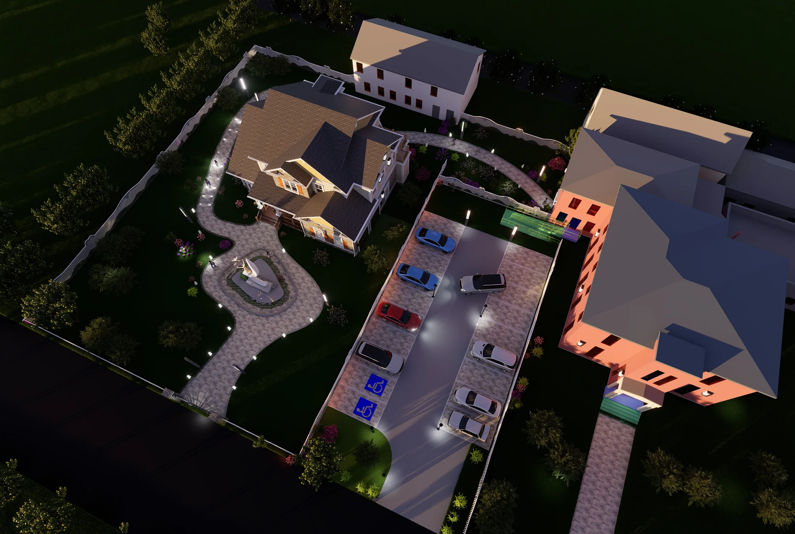

A-01 · Social Architecture
Aurora Shelter ‘Home’
A residential shelter environment shaped around safety, dignity, and a renewed sense of belonging.

- Year
- 2025
- Location / Field
- Toledo, Ohio
- Role
- Independent design
- Recognition / Method
- AIA Toledo HSDC · Civic recognition
Designing dignity, not an institution.
Experiences in Toledo’s streets and shelters changed my understanding of architecture. In winter, I often saw unhoused residents holding signs asking for a home, and I began to question what happened after they disappeared from those corners.
The 2025 AIA Toledo design competition created an opportunity to confront that question directly through a shelter for unhoused women and children. Conversations with Aurora Project residents made the priorities clear: safety, dignity, privacy, and the ordinary comfort of a place that feels like home.
Rather than reproduce an institutional shelter model, the proposal draws from familiar residential patterns in Toledo. Gardens, protected paths, domestic-scale volumes, and clear thresholds work together to support belonging without reinforcing marginalization. The project’s recognition by Toledo City Council confirmed that architecture can participate in public dialogue and contribute to social healing.